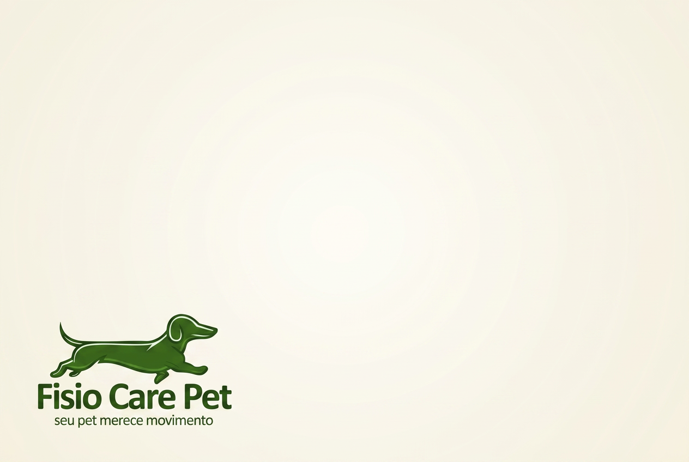
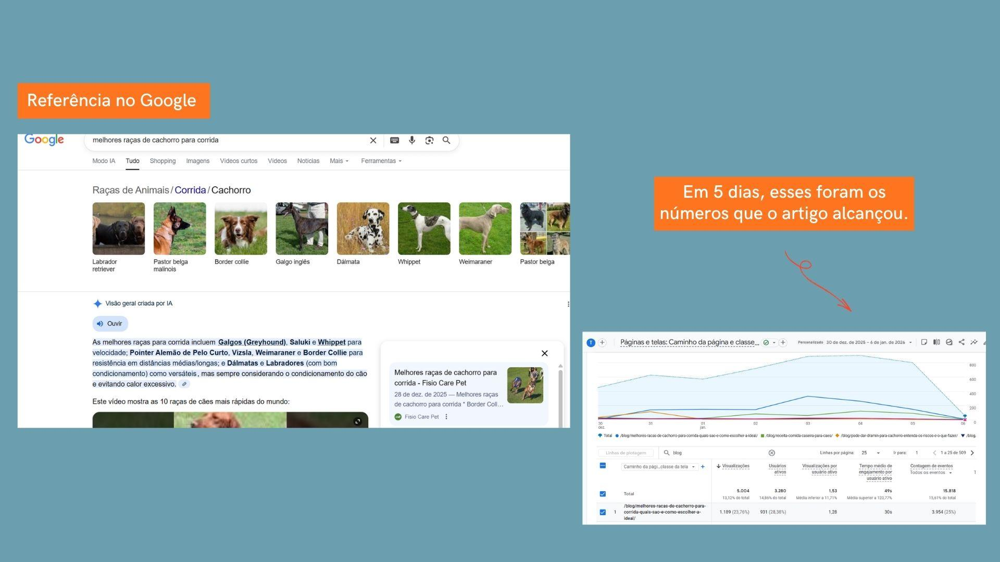

Case de Sucesso
Fisio Care Pet | SEO Editorial
Uma estratégia editorial construída sobre intenção de busca e E-E-A-T que colocou a clínica como referência no Google, alcançando 5.004 usuários em 5 dias e cerca de 15 mil visualizações semanais no artigo principal.

O desafio
Ganhar autoridade além das páginas institucionais
Além das páginas institucionais, a Fisio Care Pet precisava fortalecer sua autoridade por meio da produção de conteúdo educativo.
O objetivo era atrair usuários em diferentes momentos da jornada de busca, responder às principais dúvidas dos tutores e aumentar a presença orgânica da marca.
A estratégia
Conteúdo pensado para a intenção de busca
Cada artigo foi desenvolvido considerando pesquisa de palavras-chave, SEO On-Page, estrutura semântica, respostas objetivas para o Google, experiência de leitura, aplicação dos princípios de E-E-A-T e foco em Featured Snippets, GEO e AEO.
Pesquisa e planejamento
Definição das pautas a partir das dúvidas reais dos tutores, agrupamento por intenção de busca e mapeamento das oportunidades de posicionamento.
SEO On-Page e semântica
Estrutura de headings, marcação, respostas objetivas para featured snippets e organização semântica para facilitar o rastreamento e a compreensão pelo Google.
Aplicação de E-E-A-T
Conteúdo produzido para transmitir experiência, expertise, autoridade e confiança, reforçando a Fisio Care Pet como referência no segmento.
Storytelling editorial
Textos que educam, geram autoridade e mantêm o leitor engajado do início ao fim, aumentando o tempo de leitura e o compartilhamento.
Resultados
Autoridade construída em poucos dias
A estratégia editorial gerou resultados expressivos logo após a publicação dos conteúdos, com crescimento consistente do tráfego orgânico e sem investimento em mídia paga.
Visualizações semanais na principal página
Usuários alcançados em apenas 5 dias
Eventos registrados no período

O artigo passou a ser citado dentro do próprio resultado de busca, alimentando a Visão Geral criada por IA e enviando tráfego qualificado para o site.
Quando SEO, intenção de busca e storytelling trabalham juntos, o artigo cumpre um papel estratégico: educa, gera autoridade e atrai usuários qualificados de forma contínua.
Quer que seu conteúdo vire referência?
Uma estratégia editorial baseada em intenção de busca e E-E-A-T pode transformar seu blog em um canal recorrente de tráfego qualificado.
Falar sobre meu projeto